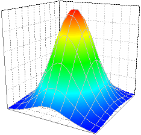
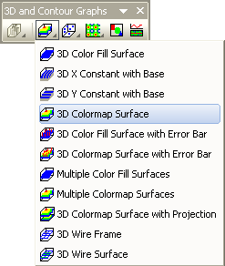

Oberflächendiagramm mit Farbabbildung
Color-Map-Surface
- 
Datenanforderungen
- Arbeitsblatt: Wählen Sie mindestens eine Z-Spalte aus (oder einen Bereich aus mindestens einer Z-Spalte). Falls die Z-Spalte verbundene XY-Spalten besitzt, werden die XY-Spalten verwendet; ansonsten werden die XY-Standardwerte des Arbeitsblatts verwendet.
- Wenn Sie XYZZ-Daten haben und ein 3D-Oberflächendiagramm zeichnen und den zweiten Z-Datensatz als Farbabbildung festlegen möchten, können Sie die Abbildungsspalte auf der Registerkarte Füllung des Dialogs Details Zeichnung angeben.
oder
- Matrix: Eine Matrix von Z-Werten
- Wenn Sie zwei Matrizen haben und ein Oberflächendiagramm mit Hilfe einer zweiten Matrix farblich abbilden wollen, sollten sich diese zwei Matrizen in dem gleichen Matrixblatt befinden wie die Matrixobjekte.
oder
- Bild: Die aktive Seite eines Bildfensters
Diagramm erstellen
Aktivieren Sie das Matrixblatt/Bildfenster oder markieren Sie die gewünschten Daten im Arbeitsblatt.
Wählen Sie im Menü .
oder
Klicken Sie auf die Schaltfläche 3D-Farbabbildung auf der Symbolleiste 3D- und Konturdiagramme.
- 
Vorlage
- glCMAP.OTP (OpenGL)
- Cmap.OTP
(installiert im Origin-Programmordner)
Notizen
Die Z-Werte bestimmen eine Oberfläche von X- und Y-Gitternetzlinien und Füllfarbe aus einer Farbpalette.